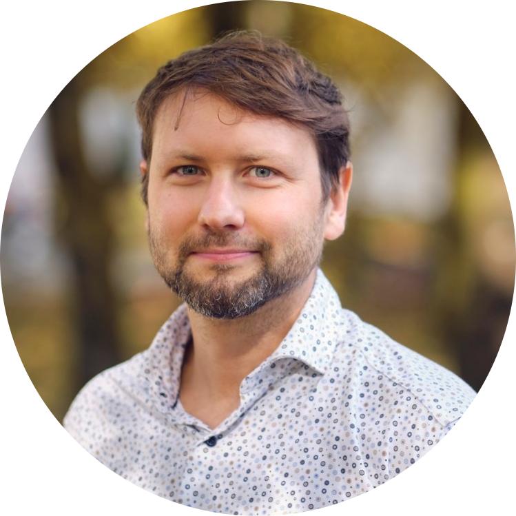
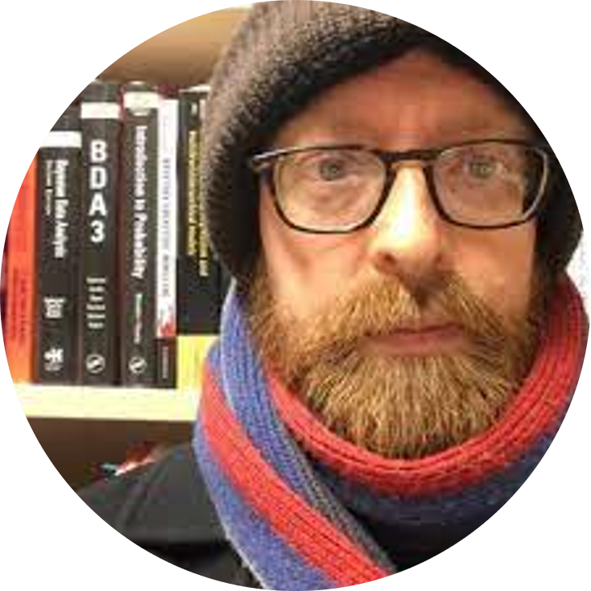
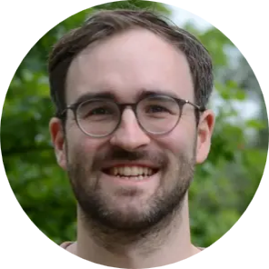
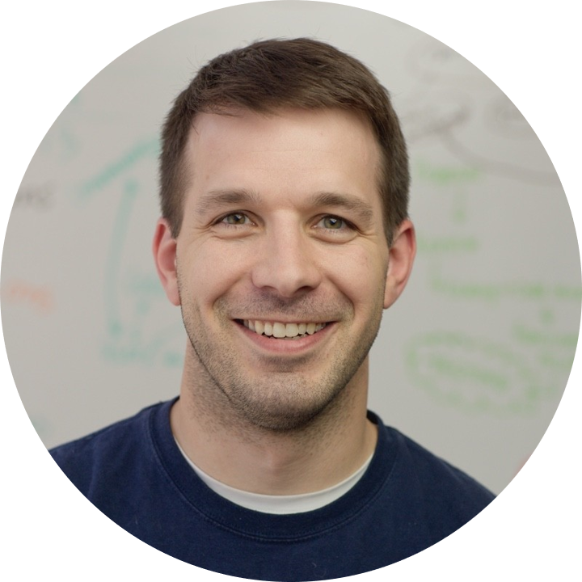
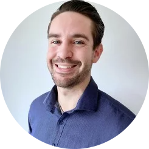

Alexander Wuttke: Replicability crisis

Monday 7 September, 09:45-10:45Prof. Dr. Alexander Wuttke, Professor of Digitalisation and Political Behaviour at the LMU, will set the scene and present an overview of the replicability crisis across fields, and an introduction to open research initiatives.
Malika Ihle: Credible research
 Monday 7 September, 11:00-11:45
Monday 7 September, 11:00-11:45
Dr. Malika Ihle, LMU Open Science Center coordinator, will give an overview of open research practices and will introduce the workshops of this summer school. She will argue that to make your research the most credible and the most likely to replicate, you can engage with preregistration, to increase the reliability of the research, and with a finite set of computing tools, to increase the reproducibility of your workflow.
Reema Gupta: Data sharing
 Tuesday 8 September, 9:00-09:45
Tuesday 8 September, 9:00-09:45
Dr. Reema Gupta from the LMU Open Science Center will explain why we should share data and the fundamentals of data sharing practicalities.
Richard McElreath: A Guerilla approach to scientific workflows

Wednesday 9 September, 9:00-10:00Prof. Dr. Richard McElreath, Director of the Department of Human Behavior, Ecology, and Culture at the Max Planck Institute for Evolutionary Anthropology, Leipzig, will take inspiration from guerilla warfare, and introduce a framework for managing scientific research that addresses the complexity of research while advancing goals of transparency and reliability. Real science is complex, and there is no single scientific method. It is a chaotic network of theories, data, models, graphs, comparisons, summaries, and narratives. A flaw in any part can ruin everything. How can small teams of researchers challenge this complexity and emerge victorious? More statistical training is not enough. More resources is not enough. Lawrence of Arabia once said, “Guerrilla warfare is more intellectual than a bayonet charge.” And this is how we too will proceed. Instead of confronting the complexity directly, with more money and more people and more data and more meta-analyses, we must develop a SCIENTIFIC WORKFLOW that subdivides, analyzes, and transparently justifies our individual research projects. The tools to do this already exist, and individual researchers can become scientific guerillas today to improve their chances of victory.
Sarah von Grebmer: Open access, preprints, postprints
 Wednesday 9 September, 10:15-11:45
Wednesday 9 September, 10:15-11:45
Dr. Sarah von Grebmer will discuss the current scientific publishing system, explore the different shades of Open Access (e.g. green, gold, diamond) and their advantages, and show what different ways there are to make your own publications freely accessible for a broader audience.
Jonas Hagenberg: Readable code

Thursday 10 September, 09:00-09:45Many research questions require code to be answered. Clear, understandable and maintainable code is key to reduce analysis errors and improve reproducibility. Jonas Hagenberg, AI consultant at Helmholtz, will give an overview which concepts work for data analysis scripts and share specific recommendations and examples for clean code that are applicable across scientific disciplines. The lecture introduces key strategies such as following a style guide, code reuse, unified project structures and code review.
Tim Errington: Assessing research replicablity

Thursday 10 September, 16:30-17:30Replicability is an important feature of scientific research, but aspects of contemporary research culture, such as an emphasis on novelty, can make replicability seem less important than it should be. The Reproducibility Project: Cancer Biology was set up to provide evidence about the replicability of preclinical research in cancer biology by repeating selected experiments from high-impact papers. A total of 50 experiments from 23 papers were repeated, generating data about the replicability of a total of 158 effects.
Dr. Tim Errington, Senior Director of Research at Center for Open Science, will present and discuss the results and implications of this large replication project.
Danny Maupin: Open Data and AI

Friday 11 September, 09:00-10:00Abstract TBD.
Danny Maupin is a Research Fellow at the University of Surrey, whose work focuses on the effect of AI on research integrity.